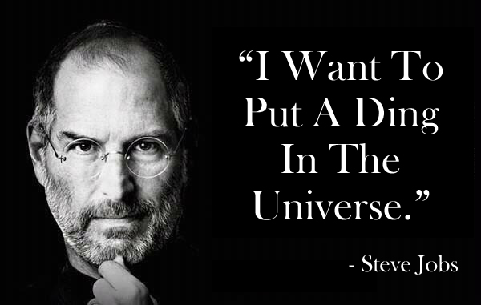

His saga is the entrepreneurial creation myth Write large: Steve Jobs cofounded Apple in his parent's garage in 1976, was ousted in 1985, returned to rescue it from near bankruptcy in 1997, and by the time he died, in October 2011, had built it into the world's most valuable company. Along the way he helped to transform seven industries: personal computing, animated movies, music, phones, tablet computing, retail stores, and digital publishing. He thus belongs in the pantheon of America’s great innovators, along with Thomas Edison, Henry Ford, and Walt Disney. None of these men was a saint, but long after their personalities are forgotten, history will remember how they applied imagination to technology and business.
One of the last times I saw him, after I had finished writing most of the book, I asked him again about his tendency to be rough on people. “Look at the results,” he replied. “These are all smart people I work with, and any of them could get a top job at another place if they were truly feeling brutalized. But they don’t.” Then he paused for a few moments and said, almost wistfully, “And we got some amazing things done.” Indeed, he and Apple had had a string of hits over the past dozen years that was greater than that of any other innovative company in modern times: iMac, iPod, iPod nano, iTunes Store, Apple Stores, MacBook, iPhone, iPad, App Store, OS X Lion—not to mention every Pixar film. And as he battled his final illness, Jobs was surrounded by an intensely loyal cadre of colleagues who had been inspired by him for years and a very loving wife, sister, and four children.
